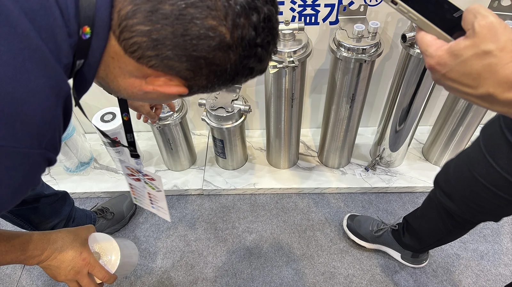

توفر Yuchen Water حلول ترشيح المياه للموزعين والمشاريع والعلامات التجارية.
توفر Yuchen Water حلول ترشيح المياه للموزعين والمشاريع والعلامات التجارية.

24/7 · PP

CTO · NSF

T33 · OEM/ODM

100% · 1.5×
في طلبات فلاتر كتلة الكربون، تتحكم Yuchen Water في تصميم التركيبة والخلط والتعبئة والضغط والتلبيد والقص والتغليف. يحافظ هذا الإجراء على توزيع المسام والقوة وتقليل الكلور وأبعاد OEM بشكل مستقر لعملاء B2B.
| الإجراء | التقنية | نقاط QC الرئيسية |
|---|---|---|
| تصميم المكونات | يتم تصميم التركيبة بعد QC للمواد الخام وتأكيدها مع صيغة الطلب. | ثبات الوزن ونسبة الوسط في كل قطعة. |
| الخلط | يمكن للخلاطات الأوتوماتيكية الكبيرة خلط أكثر من 500 كجم في الدفعة الواحدة. | ثبات الكثافة في كل كتلة كربون. |
| التعبئة | تملأ آلات التعبئة الأوتوماتيكية القوالب بحجم مضبوط. | وزن مستقر لكل قطعة. |
| الضغط | يوفر الضغط نصف الأوتوماتيكي ضغطا ثابتا أثناء التشكيل. | كثافة أعلى وبنية مسام أكثر انتظاما. |
| التلبيد | يتبع التلبيد منحنى الوقت والحرارة المعتمد. | ثبات وقت التلبيد والحرارة وقوة الربط. |
| إخراج القالب | الإخراج نصف الأوتوماتيكي يقلل الضرر بعد التلبيد. | معدل أعلى للمنتج النهائي. |
| القص | يحافظ القص نصف الأوتوماتيكي على طول الخرطوشة. | يمكن ضبط التفاوت عادة حول 0.2 مم. |
| التغليف | فحص يدوي مع تغليف شبه مفرغ أو كراتين تصدير. | حماية للمنتجات أثناء التخزين والشحن. |
قبل الإنتاج الكمي، يتم إعداد عينات لكل طلب وفق معايير الشركة أو متطلبات العميل. يتم تأكيد التركيبة ووقت التلبيد والحرارة ومعلمات العملية أولا. يمكن فحص العينات باختبار التهوية ودورات الضغط المتكررة لضمان بقاء توزيع المسام والقوة الميكانيكية وتقليل الكلور وإزالة الطعم والرائحة ضمن المواصفة المتفق عليها.
أثناء الإنتاج يراقب المشغلون الحرارة والتردد والضغط ووزن التعبئة. تساعد هذه الضوابط على تشغيل خط كتلة الكربون بثبات وجعل كل دفعة مناسبة لطلبات خراطيش فلاتر المياه OEM.
تخضع الخراطيش النهائية لفحص عينات الدفعة أو الفحص الكامل حسب الطلب. يبحث QC عن العيوب المرئية والتشققات والوزن غير الطبيعي وهبوط الضغط غير المستقر ومشكلات أداء الترشيح قبل التغليف.
تتوفر درجات ترشيح اسمية 0.5 و1 و5 و10 ميكرون مع قدرة عالية على حمل الأوساخ. صممت كتل الكربون النشط من قشرة جوز الهند لتقليل الكلور والطعم والرائحة وVOCs، مع هبوط ضغط منخفض ومنع خروج دقائق الكربون وتقديم بديل اقتصادي لكتل الكربون المبثوقة.
للمشاريع التي تحتاج وثائق، يمكن اعتماد أو اختبار مواد أو منتجات مختارة وفق متطلبات WQA وNSF/ANSI 42 عند التطبيق وتأكيد ذلك في الطلب. يمكن لعملاء OEM طلب OD وID وطول وأشكال وملصقات شعار وتغليف مخصص. يمكن توفير خيارات كربون نشط من قشرة جوز الهند بقيمة يود أعلى من 1000 وامتصاص أزرق الميثيلين أعلى من 120 عند تحديدها.
توضح صفحة التصنيع مراحل التشكيل والتجميع والفحص ووضع الملصقات وتجهيز المنتجات للتصدير.



Multi-layer thermally-bonded sediment filters: 0.5 to 50 µm. Capacity: 200,000 قطعة/month.
CTO · 1/5/10 µm
TFC · 50-600 GPD
PVC/PES · 0.01 µm
▣ · SMT · ISO 9001
Q/P/TDS/QC